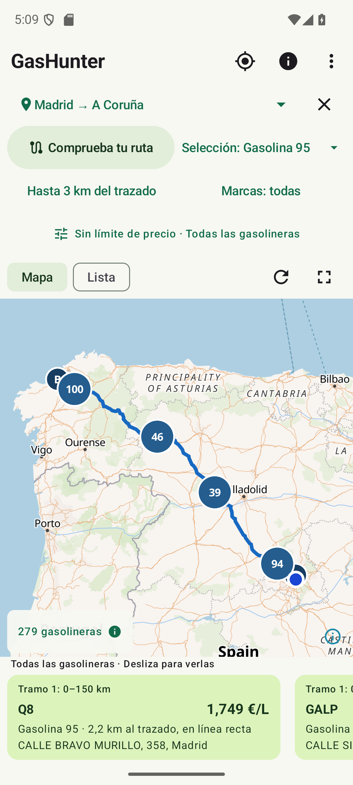
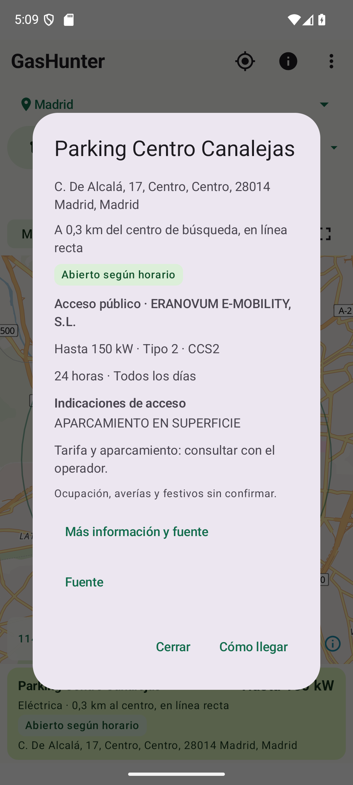

Proyecto personal · Android y datos públicos
GasHunter
Comparar precios de carburantes y encontrar opciones cerca de una zona o ruta.
Disponible en Google Play
La idea
Quería consultar precios y estaciones sin perder de vista el recorrido. GasHunter permite elegir una zona o una ruta, filtrar por combustible y explorar las opciones en un mapa o una lista.
Mi participación
He definido las funcionalidades, priorizado cambios de la interfaz, probado búsquedas, filtros y rutas y gestionado la publicación en Google Play. La implementación y parte de la documentación se han realizado con apoyo de IA, revisando el funcionamiento y los resultados.
Kotlin · Jetpack Compose · MapLibre · Datos MITECO · Python · GitHub Actions
La app está disponible en Google Play. El código se mantiene privado; esta página recoge la explicación del proyecto, sus capturas y la documentación pública del catálogo de datos.

Datos y comprobaciones
El proyecto combina precios de MITECO con mapas y servicios de rutas. También incluye un catálogo de recarga preparado a partir de datos públicos RIPREE: normalización de registros, comprobación de ubicaciones y horarios y conservación de la procedencia de la información.
Un proceso con Python y GitHub Actions actualiza ese catálogo. Si la descarga o las comprobaciones fallan, se conserva la última publicación válida. Los horarios de la fuente no confirman ocupación ni averías en tiempo real.
Información útil y límites claros
Las fichas reúnen ubicación, características y condiciones disponibles en la fuente. Distinguen los datos conocidos de lo que no se puede confirmar. Las pruebas también sirven para ajustar la información que se muestra y cómo se presenta.
Las capturas pertenecen a una versión de desarrollo; algunas pantallas pueden diferir de la versión publicada en Google Play.
